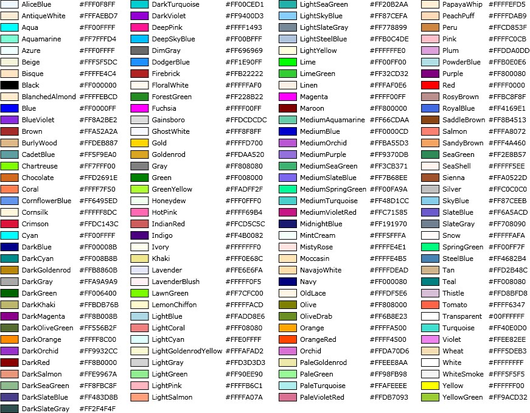

|
报告配置
|
ParticleScout报告使用XML格式（Extensible Markup Language）进行配置，结构如下：
WITec
Style
Data
Colors
Groups
Categories
Visual Elements (Map, Thumbnail, Bars, Pie, Table)
Data
[...]
点击软件中的示例按钮，可自动创建示例XML代码。
脚本必须以
<WITec>
并以
</WITec>
样式标签
您可以定义恰好一个样式标签。
样式标签可用于定义一些显示属性：
<Style ScaleFactor='2'
ShowCaptions='true'
CaptionBackground='LightGray'
CaptionFontSize='16'
CaptionPlacement='Top'
CaptionBorderThickness='1'
CaptionBorderColor='Gray'
ElementBackground='Yellow'
CanvasBackground='#11000000'>
ScaleFactor：定义缩放因子以缩放所有报告绘图的大小（0.3到3，默认：1）。
ShowCaptions：显示或隐藏所有标题（默认：true）。
CaptionBackground：定义标题背景的颜色（默认：#11000000）。
CaptionFontSize：定义标题字体大小（默认：14）。
CaptionPlacement：可以是顶部或底部（默认：Top）。
CaptionBorderThickness：定义标题周围边框的大小（默认：0）。
CaptionBorderColor：定义标题边框的颜色（默认：Transparent）。
ElementBackground：定义每个元素背景的颜色（默认：Transparent）。
CanvasBackground：定义画布的颜色（默认：White）。
数据标签
您可以定义任意数量的数据标签。必须至少存在一个数据标签。
在每个数据标签中，您可以定义粒子属性的颜色、排序、分组和分类。
可以指定任意数量的可视元素，以定义排序后的数据应如何在报告中呈现。
<Data GroupCategoryName='Material'
SortCategory='Total 面积'>
<Colors> [...]
<DynamicGroup> [...]
<NamedGroup> [...]
<Category> [...]
<Map> [...]
<Bars> [...]
<Pie> [...]
<Thumbnail> [...]
<Table> [...]
</Data>
GroupCategoryName：仅用于表格。定义分组列的标题。
SortCategory：定义应用于排序数据的类别名称。
颜色标签
颜色用于地图和条形图。
定义的颜色数量将决定地图和条形图中可见的类别数量。
您可以使用十六进制 (A)RGB 值或字符串表示来定义颜色
（请参阅Microsoft文档中的 System.Windows.Media.Colors 类）：
<Colors DefaultColor='LightGray'>
<颜色 值='#4572A7' />
<颜色 值='#4BACC6' />
<颜色 值='#92D050' />
<颜色 值='#F79646' />
</Colors>
DefaultColor：仅用于表格元素。定义最左侧列的分组名称/标题。
动态分组标签
这将自动创建动态数量的粒子分组。
每个分组由一个唯一的字符串/名称定义，该名称使用字符串表达式从每个粒子中计算得出。
<DynamicGroup NameExpression='Material' Condition='NOT Material.Equals("PET")' />
NameExpression： 一个字符串表达式。
此表达式将自动为每个粒子计算。
您可以在此处使用任何粒子属性，例如 Material。
所有返回相同字符串的粒子将属于同一分组（例如，所有Material为"PMMA"的粒子）。
Condition： 一个布尔表达式（可选）。只有匹配此表达式的粒子将用于创建分组。
命名分组标签
这将创建一个具有用户定义名称和条件的分组。
Name： 分组的名称。用作表格行分组名称。
Condition： 一个布尔表达式。只有匹配表达式的粒子将属于此分组。
颜色： 分组的颜色。用于地图和地图图例。
Position： 可以是"Top"、"Bottom"或"默认"。可以将分组置于所有已排序分组的顶部或底部。
类别标签
这将创建一个具有用户定义名称和条件的类别。类别可用作表格呈现中的列或条形图中。
Name： 类别的名称。用作表格列标题。
Condition： 一个布尔表达式。只有匹配表达式的粒子将属于此类别。
计数： 允许定义如何计算类别的"总和值"。
如果未定义"计数表达式"，则使用值"1"。
必须是以下方法之一的方法调用：
Min, Max, Sum, Average, Median, StandardDeviation.
使用示例："Sum(面积)"。括号中的字符串是一个数值表达式，可以使用所有粒子属性。
NormMode： 通过除以所有粒子的计数结果来归一化每个分组的类别结果（None、Relative1、Relative100）。
颜色： 类别的颜色。仅用作表格列背景颜色。
StringFormat： 表格单元格内容的字符串表示表达式。请参阅Microsoft .NET字符串格式文档。
示例：如果数字是 0.2345，则 StringFormat "F0" = 0，"F1" = 0.2，"F2" = 0.23，"P2" = 23.45 %
可视元素
以下属性可用于所有可视元素：
标题： 用于周围分组框的标题。
SideBySide： 设为"true"可将元素水平放置在前一个可视元素的右侧。
ShowEmptyGroups： 设为"true"可显示没有匹配粒子的分组。
ShowEmptyCategories： 设为"true"可显示没有匹配粒子的类别。
InvertData： 设为"true"可将分组显示为类别，类别显示为分组。
地图标签
这将使用定义的颜色在地图中呈现分组。
<Map 背景='Transparent'
ImageOpacity='0.0'
MaskOpacity='1.0'
宽度='400'
LegendType='NameAndValue'
ShowScaleBar='true'
ScaleBarForeground='Blue'
ScaleBarBackground='White'
ScaleBarVerticalAlignment='Bottom'
ScaleBarHorizontalAlignment='Left'/>
背景： 背景颜色（当 ImageOpacity != 1 时使用，默认：Transparent）。
ImageOpacity： 定义粒子图像的不透明度（0到1，默认：0）。
MaskOpacity： 定义粒子掩模的不透明度（0到1，默认：1）。
宽度： 地图的宽度（以像素为单位，2到4000，默认：400）。
高度将使用正确的比例自动调整。
像素大小随全局报告缩放因子缩放。
LegendType： 图例的可见性（None、Name、NameAndValue，默认：NameAndValue）。
ValueCategory：一个类别的名称，定义图例的值（默认：未定义）。
ValueStringFormat：值的字符串格式（默认：未定义）。
ShowScaleBar： 设为"true"可在地图上显示标尺条（默认：true）。
ScaleBarForeground： 标尺条颜色（默认：Blue）。
ScaleBarBackground： 标尺条背景颜色（默认：White）。
ScaleBarVerticalAlignment： 标尺条垂直位置（Bottom、Top、Center，默认：Bottom）。
ScaleBarHorizontalAlignment： 标尺条水平位置（Left、Center、Right，默认：Left）。
条形图标签
显示带有X/Y轴和图例的条形图。
<Bars 标题="Categories"
宽度='500'
高度='300'
BarsSideBySide='false'
Normalize='true'
BarWidth='0.7'
XAxisLabelRotation='45'
LegendType='NameAndValue'
InvertData='true' />
宽度： 图表的宽度，单位与DPI相关（4到4000，默认：500）。
高度： 图表的高度，单位与DPI相关（4到4000，默认：300）。
BarsSideBySide： 设为"true"可将每个分组显示为彼此相邻的独立条形（默认：false）
Normalize： 设为"true"可将类别归一化为100%（默认：false）。
BarWidth： 每个类别的宽度，作为因子（0.1到1，默认：0.7）。
XAxisLabelRotation： X轴标签角度（以度为单位，-180到180，默认：45）
LegendType： 图例的可见性（None、Name、NameAndValue）
ValueCategory：条形图的一个类别名称，定义值（默认：未定义）。
ValueStringFormat：条形图值标签的字符串格式（默认：未定义）。
饼图标签
显示带有图例的饼图。
<Pie 标题="Some Pie"
宽度='300'
高度='300'
OutsideLabelStyle='NameAndValue'
InsideLabelStyle='None'
LegendType='Name'/>
宽度： 图表的宽度，单位与DPI相关（4到4000，默认：300）。
高度： 图表的高度，单位与DPI相关（4到4000，默认：300）。
OutsideLabelStyle： 每个饼图扇区外部标签的可见性（None、Name、NameAndValue、值，默认：None）。
InsideLabelStyle： 每个饼图扇区内部标签的可见性（None、Name、NameAndValue、值，默认：None）。
BorderColor： 每个饼图扇区边框的颜色（默认：White）
BorderThickness： 每个饼图扇区边框的厚度，单位与DPI相关（默认：1.0）
LegendType： 图例的可见性（None、Name、NameAndValue，默认：NameAndValue）
ValueCategory：饼图的一个类别名称，定义值（默认：未定义）。
ValueStringFormat：饼图值标签的字符串格式（默认：未定义）。
缩略图标签
这将呈现一个粒子分组列表，包含名称、粒子缩略图和代表性光谱（如果已测量）。
<Thumbnail NumberOfEntries='3'
NumberOfThumbnails='3'
ThumbnailWidth='60'
SpectrumWidth='300'
SpectrumHeight='60'
ShowXAxis='false'
ShowYAxis='false'
XAxisTitle='1/cm'
SortThumbnailsBy='面积'
SortSpectraBy='HQI' />
NumberOfEntries： 列表条目的最大数量（最大为分组数量，默认：3）。
NumberOfThumbnails： 缩略图的数量（0到20，默认：2）。
ThumbnailWidth： 每个缩略图的宽度，单位与DPI相关（0到4000，默认：60）。
SpectrumWidth： 光谱的宽度，单位与DPI相关（0到4000，默认：400）。
SpectrumHeight： 光谱的高度，单位与DPI相关（0到4000，默认：60）。
ShowXAxis： 设为"true"可显示X轴。
ShowYAxis： 设为"true"可显示Y轴。
XAxisTitle： X轴的标题。
SortThumbnailsBy： 一个返回粒子属性的表达式，用于排序缩略图（例如"面积" -> 显示面积最大的粒子）
SortSpectraBy： 一个返回粒子属性的表达式，用于排序光谱（例如"面积" -> 显示面积最大的粒子的光谱）
表格标签
显示一个以分组为行、类别为列的表格。
<Table ColumnWidth='50'
MasterColumnWidth='0'
HeadingColorOpacity='0.5'
CellBackground='LightBlue'
CellBorderThickness='1'
CellBorderColor='Transparent'
CellPadding='2'/>
ColumnWidth： 定义每个类别列的宽度，单位与DPI相关。如果为0，则每列宽度为最小（默认：0）。
MasterColumnWidth： 定义最左侧列的宽度，单位与DPI相关。如果为0，则宽度为最小（默认：0）。
HeadingColorOpacity： 定义标题颜色或列标题和行标题的不透明度（0到1，默认：0.5）。
CellBackground： 定义每个单元格的背景颜色（默认：#19000000）。
CellBorderThickness： 定义每个单元格边框的厚度。请参见 厚度格式。（默认：1）。
CellBorderColor： 定义单元格边框的颜色。仅在厚度不为0时可见。（默认：Transparent）。
CellPadding： 定义单元格内容周围的空间。请参见 厚度格式。（默认：2）。
使用一个数字为左/右/上/下定义相同的厚度：'2'
使用两个数字定义左/右和上/下：'5 2'
使用四个数字定义左/上/右/下：'2 2 1 0'
可用的颜色字符串
